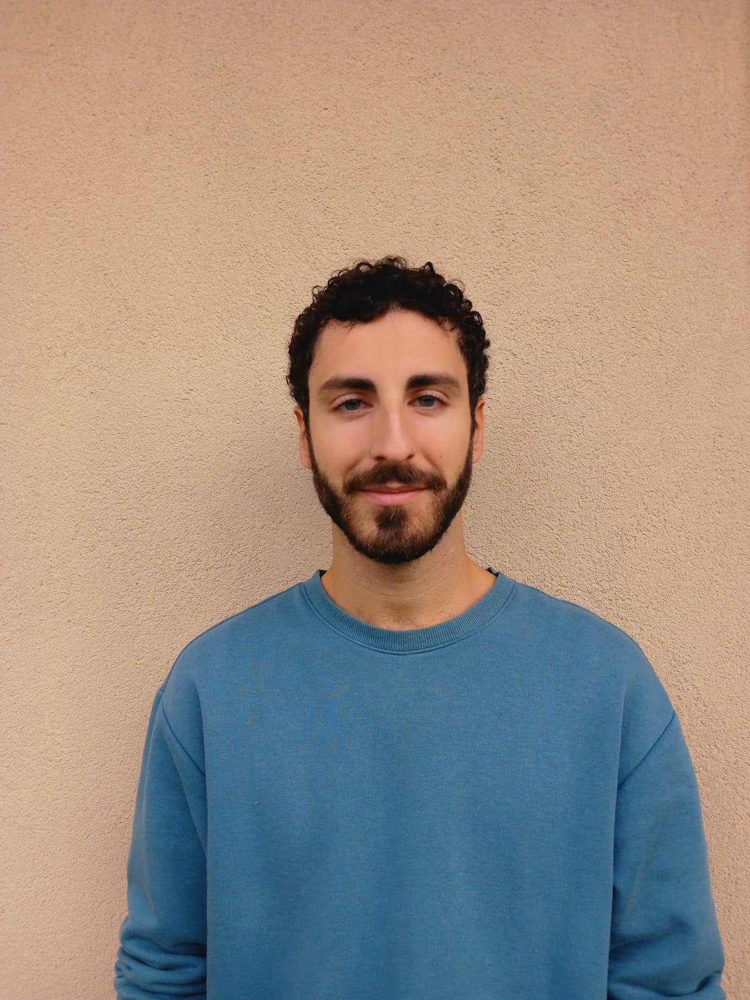

Psicologia Analitica Archetipica
Psicologo — Ravenna
Un percorso verso la comprensione di sé, attraverso i simboli, i sogni e le immagini dell'inconscio collettivo. Ricevo in presenza a Ravenna e online.
Chi sono
Sono Francesco Mazzoli, psicologo iscritto all'Albo degli Psicologi dell'Emilia-Romagna. Il mio lavoro si fonda sull'approccio analitico archetipico, che affonda le radici nella psicologia del profondo di C.G. Jung e nella sua ulteriore elaborazione da parte di James Hillman.
Credo che ogni disagio psicologico contenga in sé una domanda di senso: non solo qualcosa da eliminare, ma un'opportunità di approfondire la conoscenza di sé e della propria storia individuale.
Nei percorsi che propongo, l'ascolto dei sogni, delle immagini interiori e dei pattern ricorrenti diventa una bussola per orientarsi nel territorio della propria vita psichica.

«Ciò che non diventa cosciente si manifesta come destino.»— C.G. Jung
L'Approccio
L'approccio analitico archetipico considera la psiche come un luogo abitato da figure, immagini e forze che trascendono la storia personale e affondano radici nell'inconscio collettivo dell'umanità. Non si tratta di «correggere» la psiche, ma di ascoltarla.
I sogni sono messaggi dell'inconscio. Attraverso la loro analisi, emergono contenuti profondi che la mente razionale non riesce a cogliere da sola.
Strutture universali della psiche — l'Ombra, l'Anima, il Sé — che prendono forma nella vita individuale attraverso emozioni, relazioni e comportamenti ricorrenti.
Ogni sintomo porta con sé un messaggio simbolico. Il lavoro psicologico è anche un lavoro di interpretazione del proprio mito personale, del proprio daimon.
Come lavoro
In presenza
Ti ricevo in uno studio condiviso a Ravenna, Via di Roma 2. Lo spazio fisico del colloquio favorisce la presenza, il raccoglimento e la creazione di un'alleanza terapeutica solida nel tempo.
Ravenna · Via di Roma 2A distanza
Per chi abita lontano o preferisce la comodità di casa propria, offro colloqui online in videochiamata. La qualità e la profondità del percorso restano invariate, anche a distanza.
Videochiamata · Tutta ItaliaDove trovarmi
Lo studio condiviso si trova nel cuore di Ravenna, un ambiente accogliente e riservato dove potrai sentirti libero di esprimerti senza giudizio. Ogni percorso nasce dall’ascolto e dal rispetto dei tuoi tempi, per aiutarti a ritrovare equilibrio e benessere.
Per un primo contatto o per concordare un appuntamento, puoi scrivermi direttamente tramite Instagram o email. Il primo colloquio è un'occasione per conoscerci, senza alcun impegno.
Dott. Francesco Mazzoli Via di Roma 2, 48121 Ravenna (RA)Contatti
Il primo incontro è fondamentale per conoscersi e valutare insieme se la mia modalità di lavoro risponde alle tue necessità. Scrivimi per fissare un colloquio conoscitivo.